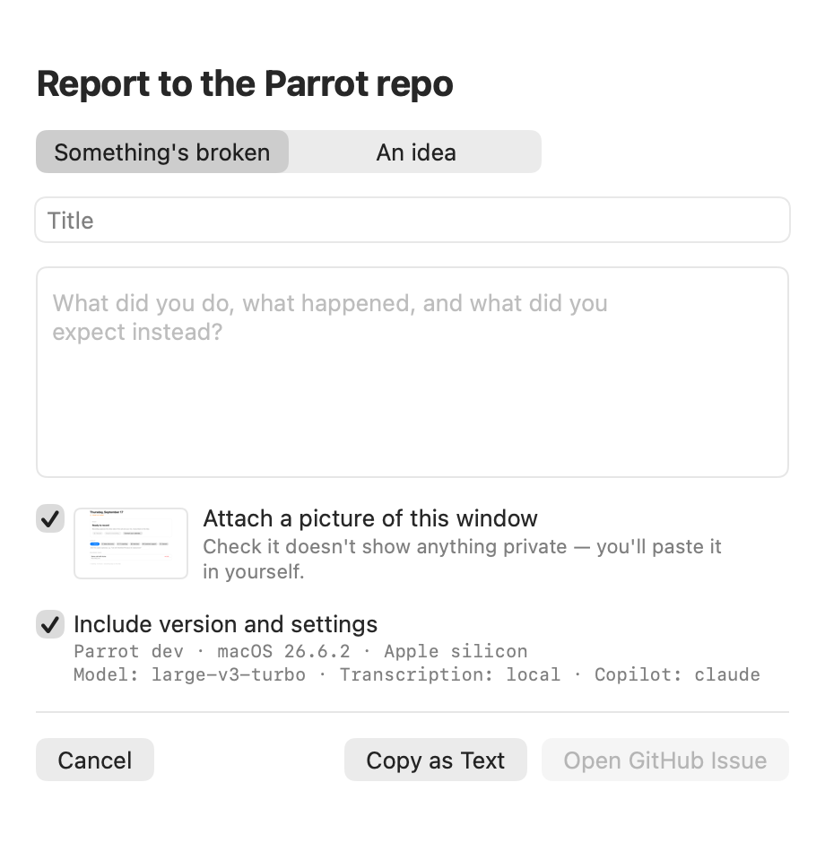

The classic. You start Parrot, everything works, then the moment you join the meeting your own words stop appearing. What's happening: some call apps (Safari-based meets are notorious) grab exclusive control of the microphone, and macOS starts feeding every other app pure silence without telling anyone. Parrot watches for exactly this. You'll see an orange "mic muted by another app" warning, and it retries every few seconds until it wins the mic back, usually the moment the call app lets go. The other side of the call records fine throughout. If your own words matter most, join the meeting first and start Parrot second.
The transcript keeps showing your lines and nothing from anyone else, and the recording's system track is dead silence from some point on. On macOS 15 and later Parrot captures the other side through a Core Audio process tap, and that tap can keep running while delivering nothing but zeros, most often right after the output route changed (AirPods connecting or dropping, a dock waking up, the call app switching devices). Nothing reports an error, so Parrot watches the samples instead: a real call, even a quiet one, always carries a little noise, and only a broken capture produces exact zeros.
After 20 seconds of zeros Parrot rebuilds the capture on its own and the device bar shows "other side went silent, reconnecting"; click it to retry immediately. After 90 seconds it also posts a macOS notification, and if Screen Recording is allowed it switches to the ScreenCaptureKit capture method for the next attempt. When audio returns you get a second notification saying so. If it never returns while people are clearly talking, stop and start the recording again; the meeting so far is kept. Parrot also rebuilds the capture whenever the default output device changes, before the fuse can even run.
To use ScreenCaptureKit for every recording instead of the tap, run
defaults write com.uygar.parrot forceSCKCapture -bool YES and
grant Screen Recording (audio only is ever read). Every one of these events
is written to the unified log with its reason, backend, and output device,
plus one "health" line per minute per stream, so after a bad call this shows
what happened:
log show --last 2h --predicate 'subsystem == "com.uygar.parrot"'
A first-time model download can genuinely take minutes on slow internet, that's normal. But if it sits there forever with no progress, quit Parrot and open it again; a fresh start clears it in almost every case. If it keeps happening, pick the model again in Settings → Transcription.
On macOS 15 and newer, the System Audio row confirms itself the first time Parrot actually hears meeting audio, so it can stay unconfirmed until your first recording. If recordings come back without the other side's voice, open System Settings → Privacy & Security → Screen & System Audio Recording and make sure Parrot is listed under "System Audio Recording Only" with the toggle on.
On macOS 14, Screen Recording permission only takes effect after a restart. Quit Parrot fully and reopen it. If the row still hasn't flipped to a green check, check System Settings → Privacy & Security → Screen Recording actually lists Parrot with the toggle on.
Loud non-speech sounds (typing right next to the mic is the usual culprit) can make Whisper hallucinate a confident sentence: "Thank you", a subtitle credit, sometimes in a language nobody spoke. Parrot now refuses to decode a chunk that has no voiced sound in it (clatter has none, speech always does), drops the known subtitle-credit boilerplate at any volume, and, when you have set a language in Settings → Transcription, drops any text that comes back in a different alphabet. Setting your language is still worth doing: it also keeps the custom-vocabulary retry from guessing the language on its own, which was the cause of Russian and French lines in an English call. Call chimes (someone joining or leaving) are pure tones and used to come out as a lone "you"; a steady-pitch gate drops those too. After a bad call, the unified log has one "transcription gates" line per recording saying how much was filtered.
Crash, force-quit, power loss: on the next launch Parrot finds the interrupted meeting and rescues whatever was already transcribed, then runs the normal report on it. Only a meeting that never captured a word is marked failed.

Click the little ladybug in the bottom right corner of the window, or use Help → Report a Bug…. Write what happened, and Parrot fills in the rest: the version you're on, your model and transcription settings, and optionally a picture of the window. Nothing is sent anywhere by itself. The button opens a pre-filled issue on GitHub, you look it over, and you post it. The screenshot is a picture of Parrot's window only, never your whole screen, and it goes on your clipboard so you paste it in yourself with ⌘V. Give it a glance first if the window was showing someone's transcript.
The same sheet takes ideas and feature requests, not just bugs.
For audio problems specifically, a diagnostic log makes them findable.
Run the app with PARROT_AUDIO_DEBUG=1, reproduce the problem,
then grab the log with:
log show --last 10m --predicate 'subsystem == "com.uygar.parrot"'
Paste that into the issue too and you've just made someone's debugging day much easier.